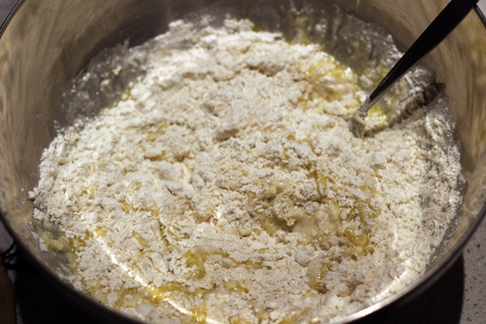

Volver
Ingredientes (4 personas)
| Producto |
Cantidad |
| Harina de trigo |
400g |
| Agua tibia |
200ml |
| Aceite de oliva |
2 cucharadas |
| Levadura fresca |
15g |
| Sal |
1 pizca |
| Arina |
(para la encimera) |

Elaboración
- Para hacer la masa de pizza italiana es muy sencillo. En un bol agregamos el aceite, el agua y la levadura. Mezclamos y seguidamente le añadimos la harina y la pizca de sal. Una vez que tengáis mas o menos mezclado todo en el bol lo pasamos a la encima para amasar bien.
- - Ahora comienza el amasado. Ponemos un poco de harina en la encimera y tendremos que amasar como 3 o 4 minutos sin parar. Veremos que hemos terminado cuando la masa esté lisa totalmente, si se pega mucho le ponemos un poco de harina y seguimos hasta que quede lisa.
- Ahora una vez lista, la dejamos reposar durante 1 hora más o menos. Una vez reposada la partimos en dos y podemos hacer dos pizzas muy majas. La amasamos y estiramos. Ponemos lo ingredientes y al horno. Listo!.